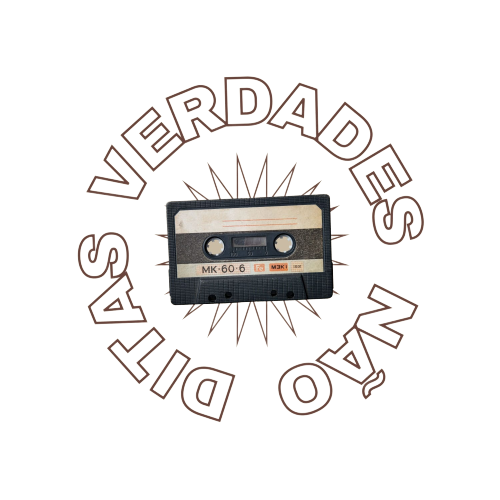

Apresentação
O projeto Verdades Não Ditas é de autoria de estudantes do 1° ano do ensino médio da ETEC CEPAM e possui a finalidade de informar a todos os públicos sobre fake news e pós-verdade. Mergulhe neste mar de informações e saia da alienação!
A fake News
As Fake News são notícias que possuem informações e conteúdos falsos ou não verídicos, sendo os principais motivos: a desinformação do indivíduo que compartilhou, ou feita de forma proposital com o intuito de atrapalhar as outras pessoas.
As Fake News são, geralmente, compartilhadas através das redes sociais ou portais de noticia (Facebook, Instagram, Twitter, Blogs, Jornais, Telegram etc).
Pós Verdade
Não existe uma definição oficial para a pós-verdade, mas, a sua referência a “tempo em que a verdade se torna sem importância”, como se destaca um período em que a convicção é superior ao fato.
A fundo na Fake news
Os motivos para que sejam criadas notícias falsas são diversos. Em alguns casos, os autores criam manchetes absurdas com o claro intuito de atrair acessos aos sites, manchar imagens, dicemenar falsas falas. Geralmente são feitas com pessoas famosas como atores, políticos e jornalistas.
Aqui vai um exemplo
- Vacinas da Covid-19 geram magnetismo - Ciência
No ano passado, surgiu uma notícia falsa de que as vacinas contra a Covid-19 causavam magnetismo nas pessoas por conter imãs em sua composição e prejudicava a saúde das mesmas. Porém, esta informação foi desmentida pelas fabricantes das vacinas, declarando que não utilizam componentes magnéticos para a produção das substancias. Não é necessário utilizar imãs e um campo magnético para a produção das vacinas, logo, não seria possível alguém estar magnetizado. Todos os efeitos colaterais estão descritos na bula.
Tipos de Fake News
As Fake News não são tão simples, existem 15 tipos diferentes de notícias falsa, sendo elas:
Sátira ou paródia : são notícias sem intenção de causar mal, mas possuem potencial de enganar.
Falsa conexãonotícias quando manchetes, imagens ou legendas dão falsas dicas do que é o conteúdo realmente.
Conteúdo enganoso: uso enganoso de uma informação para usá-la contra um assunto ou uma pessoa.
Falso contexto: notícia quando um conteúdo genuíno é compartilhado com um contexto falso.
Conteúdo imposto: quando fontes (pessoas, organizações, entidades) têm seus nomes usados, mas com afirmações que não são suas.
Conteúdo manipulado: quando uma informação ou ideia verdadeira é manipulada para enganar o público.
Conteúdo fabricado: feito do zero, é 100% falso e construído com intuito de desinformar o público e causar algum mal. Também é importante ressaltar que esses tipos de notícias falsas possuem e compartilham as mesmas intenções:
Jornalismo mal-feito: falsa conexão, conteúdo enganoso e falso contexto.
Paródia: sátira, conteúdo impostor e conteúdo fabricado.
Provocações: conteúdo impostor, conteúdo manipulado e conteúdo fabricado.
Paixão: falso contexto.
Partidarismo: conteúdo enganoso e falso contexto.
Lucro: falsa conexão e conteúdo impostor.
Influência política: conteúdo enganoso, falso contexto, conteúdo manipulado e conteúdo fabricado.
Propaganda: conteúdo enganoso, falso contexto, conteúdo impostor, conteúdo manipulado e conteúdo fabricado.
Fake News durante a história
Plano Cohen
O Plano Cohen foi um documento divulgado durante o primeiro mandato de Getúlio Vargas, conhecido como “Era Vargas”. O documento possuía um plano dos comunistas integrantes da Internacional Comunista que tinha o objetivo de tirar Vargas do poder, sendo anunciado na rádio “Hora do Brasil” em 1937.
Devido a suposta ameaça, a eleição presidencial de 1938 foi cancelada, fazendo Vargas continuar no poder até o final de 1945. No último ano da Era Vargas, a informação que o Plano Cohen era falso havia sido divulgada.
O plano havia sido criado pelo general Olímpio Mourão sendo usado de pretexto para manter Vargas no poder, pois Getúlio queria continuar na presidência da república.
Um fato histórico ajudou o golpe. Em 1935, aconteceu um episódio denominado de “Intentona Comunista”. Os comunistas tentaram retirar Vargas do poder, porém foram impedidos pela guarda governamental.
Devido ao anuncio de uma segunda ameaça, Vargas instaurou o “Estado Novo” em 1937 e conseguiu continuar no poder até 1945.
Consequências da Fake News
Linchamento de inocentes
Pessoas inocentes, que não cometeram algum crime ou alguma atitude grave, podem ser prejudicadas, sendo linchadas e excluídas da sociedade. Um exemplo famoso aconteceu em 2014 no Brasil, quando uma mulher que morava em Guarujá até a morte por causa de uma suposta acusação de sequestrar crianças com o intuito de realizar rituais de magia negra.
Questões de Saúde Pública
Quando se trata de fake news, um campo muito afetado negativamente é a saúde. Os casos mais recentes são sobre a vacina contra a Covid-19. Surgiram informações de diversos tipos: vacina não possui eficácia para o combate, causa magnetismo, possuem um chip para rastrear as pessoas, causava AIDS etc. Algumas dessas notícias foram compartilhadas pelo Presidente da República Jair Bolsonaro.
Homofobia
Preconceito com LGBTs também estão presentes nas fake news. No ano de 2016, o MEC (Ministério da Educação) teve que fazer um pronunciamento comprovando a falta de veracidade da notícia de que existia um “kit gay” nas escolas públicas. O tal do “kit gay” foi utilizado como uma forma de espalhar o preconceito. .
Xenofobia
A xenofobia é um preconceito com pessoas nascidas em outro país. Um caso muito repercutido no Brasil é sobre imigrantes venezuelanos, alegando o uso da violência para a entrada no país. .
Legitimação da Violência
A violência causada pelas notícias falsas é muito recorrente. Outro caso famoso e polêmico é sobre o assassinato da vereadora Marielle Franco, por uma suposta ligação com o tráfico de drogas. Após este acontecimento, a Justiça do Rio de determinou a retirada do conteúdo do ar. .
A fundo na Pós verdade
A “pós-verdade” é um termo muito recente, por este motivo muitas pessoas consideram difícil definir o significado da expressão, porém, a Oxford Dictionaries é um dos poucos dicionários que atribui um significado sendo a pós-verdade "relativo a ou que denota circunstâncias nas quais fatos objetivos são menos influenciadores na formação da opinião pública do que apelos à emoção ou à crença pessoal". Basicamente, a “pós-verdade” significa que as interpretações e crenças pessoais sobre o fato são mais importantes que o próprio fato.
Origem da pós-verdade
A expressão pós-verdade é mais recente, surgiu em surgiu em 1992 pelo jornalista sérvio-americano Steve Tesich da revista “The Nation”, tendo como assunto a Guerra do Golfo (1990-1991).
No ano de 2004, o escritor norte-americano Ralph Keyes publicou um livro com o título “A Era da Pós-Verdade: Desonestidade e Decepção na Vida Contemporânea”. A obra trata de sobre a atuação e a influencia da pós-verdade na sociedade atual.
Porém, a expressão “pós-verdade” passou a ser muito utilizado a partir de 2016, utilizado devido a eleição presidencial americana e a saída do Reino Unido da União Europeia.
Durante as eleições de 2016 nos Estados Unidos, Donald Trump compartilhou informações falsas com o intuito de prejudicar sua rival, Hilary Clinton, sendo elas: o desemprego nos EUA ultrapassava os 40%; Clinton era a responsável pela criação do Estado Islâmico; Barack Obama era muçulmano; e que o papa Francisco apoiava sua candidatura.
Já sobre o Brexit, surgiu uma informação de que a permanecia do Reino Unido custava 470 milhões de dólares por semana à União Europeia. Após isso, a informação foi desmentida, porém o estrago da pós-verdade era irreparável.
Tipos de pós-verdade
Assim como a fake news, a pós-verdade não é tão simples, possuindo tipos diferentes, sendo elas:
Insinuação;
Pressuposição;
Subentendido;
Inversão da relevância.
Motivos da pós-verdade
Descentralização da informação: relacionada às redes sociais pela facilidade de divulgação das informações. As notícias podem ser compartilhadas de forma incompleta.
Ambiente de forte polarização: a disputa política é um dos principais motivos da pós-verdade , pois existem pessoas com intuito de prejudicar um político de outra ideologia.
Crise de confiança: com as redes sociais, é fácil qualquer pessoa divulgar informações de forma muito rápida, fazendo os veículos de comunicações tradicionais e renomadas perderem força.
O fortalecimento de uma visão de mundo que relativiza a verdade: causado pela globalização, as pessoas possuem um modo de pensar individualista e imediatista, fazendo acreditarem no que lhes convém.
Formas de combater a Fake News
- Verificar se as mensagens que você recebe nas redes sociais são verdadeiras;
- Não compartilhar os conteúdos caso você tenha dúvida se eles são verdadeiros;
- Denunciar as mensagens falsas em sites e plataformas de redes sociais;
- Verificar se as mensagens possuem informações específicas, como
datas e locais;- Procurar informações e opiniões contrárias as suas;
- Reler as informações;
- Checar as informações em várias fontes;
- Manter-se informado;
- Encaminhar a mensagem falsa para agencias de verificação de fatos;
- Acessar para agencias de verificação de fatos.
Agências de fact chacking
Como citado anteriormente, existem outra as agências de checagem de fatos, também conhecido como agências de “fact-checking” (termo na língua inglesa).
O Fact-Checking é uma prática relevante é a preocupação com a transparência. Os métodos autênticos de checagem variam pouco de plataforma a plataforma e, se o veículo leva a prática a sério, normalmente se dispõe a explicar como chegou à conclusão sobre a veracidade das informações ali publicadas. Destacar as fontes originais de informação com links e referências é um começo, mas a tarefa é maior: contexto, diversidade de personalidades que são alvo de checagem e uma política clara de erros também asseguram qualidade à checagem de fatos.
Agência Lupa
O primeiro é a agência Lupa. Para a checagem de fatos, os jornalistas da Lupa observam, diariamente, o que é dito por políticos, líderes sociais e celebridades, em jornais, revistas, rádios, programas de TV e na internet. Ao selecionar a frase em que pretende trabalhar, a equipe adota três critérios de relevância, e dá preferência a afirmações feitas por personalidades de destaque nacional, assuntos de interesse público (que afetam o maior número de pessoas possível) e/ou que tenham ganhado destaque na imprensa ou na internet recentemente. Preocupa-se, portanto, com “quem fala”, “o que fala” e “que barulho faz”.
Agência Pública - Truco
O Truco foi um projeto de checagem de fact checking realizado entre 2014 e 2018, pela primeira agência de jornalismo investigativo sem fins lucrativos do Brasil, a Pública. O projeto possuía o objetivo de aprimorar o discurso público e a democracia, além de tornar as autoridades mais responsáveis em suas declarações.
Os critérios utilizados para a realização das checagens consistiam na necessidade de conter um dado, fazer referência a leis, permissões, proibições, situações verificáveis ou trazer afirmações categóricas, e possuir relevância para o debate público.
As frases selecionadas devem apresentar os devidos princípios:
- Não ser um juízo de valor ou expressão de uma opinião subjetiva;
- Não fazer uma previsão ou falar de algo que pode acontecer no futuro.
As checagens realizadas pelo Truco eram feitas pela Redação da Agência Pública, e o projeto estava, portanto, submetido ao Conselho Consultivo e financiadores institucionais da agência (Ford Foundation e Oak Foundation). Integrava-se a International Fact-Checking Network (IFCN), rede organizada que reúne os principais sites de fact checking do mundo.